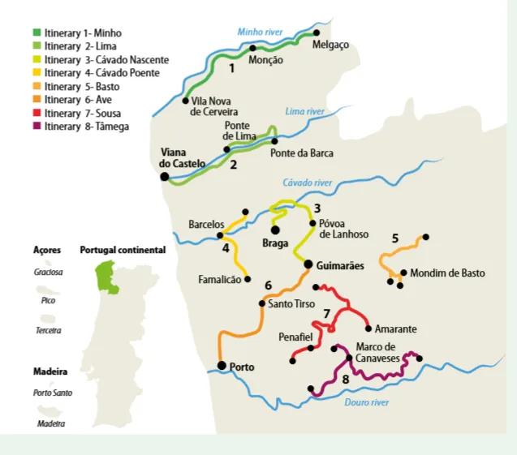
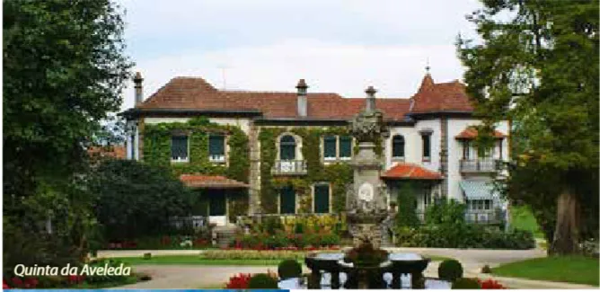
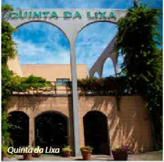
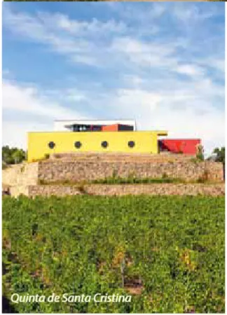

Kapitel 4 · Die portugiesischen Weinregionen
Weinregion Vinho Verde
Kennzahlen (2022)
Rebfläche: 24.371 ha (IVV) (nach anderen Schätzungen 17.268 ha)
Gesamterzeugung: 1.004.277 Liter
Durchschnittsertrag: 4.120 Liter/ha
Zertifizierte Weintypen: 96 % DO-Wein
Zahl der Erzeuger: 13.110
Abfüllende Kellereien: 379
Geschichte
Hinweise auf Weinbau in der Region Vinho Verde reichen bis in die Römerzeit zurück. Die Unterregionen Basto, Ribeira do Tâmega, Monção und Ribeira Lima sind seit Beginn der Neuzeit für ihre Qualitätsweine bekannt. Die ersten Exporte dieser Weine gingen Anfang des 16. Jahrhunderts von Monção und Ribeira Lima über den Hafen von Viana nach England. Die Abgrenzung verschiedener Weinbaugebiete begann 1908. Große Qualitätsfortschritte brachte das Jahr 1926 mit Vorschriften für Erzeugung und Vertrieb des Vinho Verde und der Gründung der Comissão de Viticultura da Região dos Vinhos Verdes (Weinbaukommission der Region Vinho Verde). Diese Stelle leitete unter Eng. J. Amândio Galhano Forschungen zur Auswahl der besten regionalen, an ihr jeweiliges Terroir angepassten Sorten ein, nachdem sich diese Methode im vorigen Jahrhundert bewährt hatte.
Terroir
Klima nach Köppen-Geiger:
Csb. Feuchtgemäßigtes Klima mit sommerlicher Trockenzeit. Kühle Nächte, subhumid. Indizes des MCC-Systems (Tonietto & Carbonneau, 2004): heliothermischer Index (HI): HI−1, Kühle-Nacht-Index (CI): +1.
Niederschlag: 1.400 mm, ungleich über das Jahr verteilt, vor allem im Herbst und Winter. Meereswinde mit häufigem Nebel und hoher relativer Luftfeuchtigkeit. Frost im zeitigen Frühjahr und Hagelgefahr ab Mitte Mai.
Höhe der Weinberge: meist zwischen 50 und 300 Metern. Geologie und Bodenkunde: Orografisch steigt die Region von der Küste allmählich landeinwärts an, sodass das ganze Gebiet dem Einfluss des Atlantiks ausgesetzt ist. Verstärkt wird dies durch die Ausrichtung der Täler der großen Flüsse von Ost nach West, die das Eindringen der Meereswinde erleichtert. Die Weinberge liegen meist auf Tiefengestein (Granite, Tonalite, Syenite und Nephelinsyenite); hervorzuheben ist jedoch die Vielfalt der Bodenstandorte der Weinberge, darunter auch Schiefer- und Tonkalkflächen.
Erzeugte Weintypen
IG-Wein Minho bzw. Landwein Minho:
Rot, Weiß, Rosé, Schaumwein.
DO Vinho Verde (+ weitere regionale Bezeichnungen): Rot, Weiß, Rosé, Schaumwein. Vinho-Verde-DO-Schaumweine (VEQPRD), Aguardente de Vinho da Região dos Vinhos Verdes (Weinbrand), Aguardente de Bagaceira da Região dos Vinhos Verdes (Tresterbrand), Vinagre de Vinho Verde (Vinho-Verde-Essig).

Regionale Kontakte
Technische Informationen: Comissão de Viticultura da Região dos Vinhos Verdes (Weinbaukommission der Region Vinho Verde), Rua da Restauração 318, 4050 Porto (www.vinhoverde.pt).
Kulturelle Informationen zum Wein der Region: Confraria do Vinho Verde (Vinho-Verde-Bruderschaft), secretaria@confrariadovinhoverde.com. Mehrere Unterregionen planen Weinbaumuseen.
Hochschulen und Weinbauforschung: Universidade do Minho, Largo do Paço, 4704-553 Braga, www.uminho.pt; Escola Superior Agrária de Ponte de Lima, www.esa.ipvc.pt
Zertifizierungsstelle: Comissão de Viticultura da Região dos Vinhos Verdes, Rua da Restauração 318, 4050-501 Porto, Tel. 00351 226 077 300; E-Mail: info@vinhosverde.pt
Website: www.vinhoverde.pt
Weintourismus: Vinho-Verde-Weinroute, Tel. 226 077 300, Porto (www.rota.vinhoverde.pt)


Informationen zu Erzeugern und Abfüllern:
http://www.ivv.min-agricultura.pt/np4/1736.html, Jahrbuch S. 99–111; rota.vinhoverde.pt und die Comissão de Viticultura da Região dos Vinhos Verdes – CVRVV: www.vinhoverde.pt.
Botanik (Biodiversität) und zugelassene Sorten
IGP „Minho“
Rechtsgrundlage: Ministerialerlass Nr. 154/2015 vom 27. Mai, Ministerialerlass Nr. 159/2014 vom 19. August, Ministerialerlass Nr. 379/2012 vom 21. November und Gesetzesdekret Nr. 212/2004 vom 23. August.
Im Vinho Verde zugelassene Sorten
Rotweine: Alfrocheiro (Tinta Bastardinha), Alicante Bouschet, Alvarelhão (Brancelho), Amaral, Aragonez (Tinta Roriz, Tempranillo), Baga, Borraçal, Cabernet Franc, Cabernet Sauvignon, Castelão, Doçal, Doce, Espadeiro, Espadeiro Mole, Grand Noir, Jaen (Mencía), Labrusco, Merlot, Mourisco, Padeiro, Pedral, Pical (Piquepoul Noir), Pinot Noir, Rabo de Anho, Sezão, Syrah (Shiraz), Tinta Barroca, Touriga Nacional, Trincadeira (Tinta Amarela, Trincadeira Preta), Verdelho Tinto, Verdial Tinto, Vinhão (Sousão), Gewürztraminer und Pinot Gris (Pinot Grigio).
Weißweine: Alvarinho, Arinto (Pedernã), Avesso, Azal, Batoca (Alvaraça), Cainho, Cascal, Chardonnay, Chenin, Colombard (Semilão), Diagalves, Esganinho, Esganoso, Fernão Pires (Maria Gomes), Folgasão, Gouveio, Lameiro, Loureiro, Malvasia Fina, Malvasia Rei, Müller-Thurgau, Pinot Blanc, Pintosa, Rabo de Ovelha, Riesling, São Mamede, Sauvignon (Sauvignon Blanc), Sercial (Esgana Cão), Tália (Ugni Blanc, Trebbiano Toscano), Trajadura (Treixadura), Verdelho, Viognier und Viosinho.

Renommierte Weingüter
in der Region:
Quinta da Aveleda: ein Familienunternehmen, vor 150 Jahren von Manoel Pedro Guedes gegründet. Die Aveleda-Weine werden aus Trauben verschiedener Unterregionen des Vinho Verde erzeugt. Die Quinta da Aveleda hat auch in andere Weinregionen investiert: Quinta Vale D. Maria (Douro), Quinta do Vale Sabor, Quinta d’Aguieira (Bairrada), Villa Alvor (Algarve). Neben 400 ha eigenen Weinbergen hat das Unternehmen Verträge mit großen unabhängigen Weinbergen und erzeugt 19 Millionen Flaschen Wein, davon 70 % für den Export. Schon vor fünf Jahren lag der Umsatz bei über 38 Millionen Euro.

Adega Cooperativa de Monção:
Diese Winzergenossenschaft wurde 1958 gegründet und hat die Marke Muralhas de Monção zu einem der bekanntesten Vinhos Verdes Portugals gemacht. 1999 entstand die Zweigstelle in Melgaço. Die 1.720 Mitglieder ernten auf 1.237 Hektar Weinbergen 8.000.000 kg Trauben, aus denen jährlich mehr als 10 Millionen Flaschen Wein entstehen. Die Genossenschaft ist bekannt für ihr unvergleichlich günstiges Mikroklima und ihre Alvarinho-Weißweine: Obwohl die meist granitischen Böden reichlich Regen erhalten, ist das Klima überwiegend mild. Das besondere Mikroklima passt perfekt zu den Geländeunterschieden. Zwischen steilen Hängen und offenen Tälern spiegeln die Weine die Nuancen der Landschaft wider.

Die Adega Cooperativa de Ponte de Lima hat eine installierte Kapazität von 11,5 Millionen Litern; rund 1.000 aktive Erzeuger sichern gemeinsam eine Jahresernte von 4 Millionen Kilogramm Trauben. Die Genossenschaft ist bekannt für ihr unvergleichlich günstiges Mikroklima und ihre Loureiro-Weißweine.
Vinhos Borges in Felgueiras will rund 60 % seiner Erzeugung von 10 Millionen Litern im Ausland absetzen. Quinta da Lixa – Sociedade Agrícola, Lda.: Die gestiegene Nachfrage der letzten Jahre veranlasste das Unternehmen, seine Kapazität zu erhöhen. Zu den bestehenden 52 Hektar Weinbergen erwarb es ein neues Gut von 33 Hektar, das jährlich weitere 350 Tonnen Trauben liefern wird.
Quinta de Santa Cristina, Caves Campelo, S.A., Anselmo Mendes Vinhos, Lda., Quinta do Soalheiro